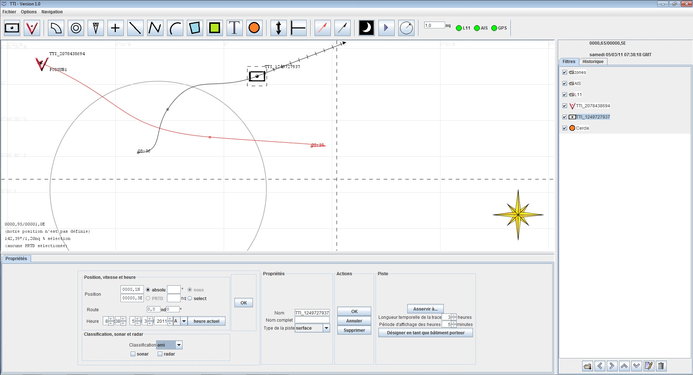
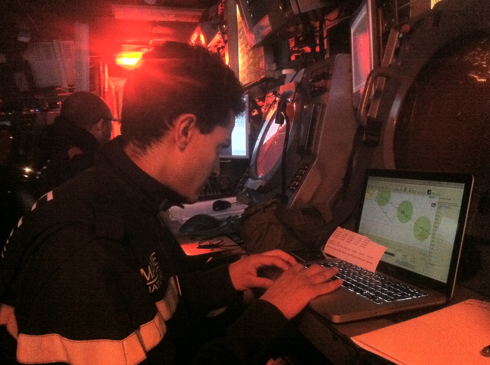

La TTI (table trançante informatisée) a été un projet pour la Marine Nationale d'affichage de la situation tactique autour d'un bateau depuis des données reçues de différent protocoles de communication (GPS, L11, AIS, etc.).
Il s'est agit de mettre en place un système délocalisé de table traçante informatisée permettant l'affichage, l'archivage et le rejeu de la situation tactique en temps réel.
L'objectif initial était de proposer une solution alternative à l'utilisation des tables traçantes vieillissantes et peu fiables sur FASM (frégate anti-sous-marine). Cependant plusieurs autres unités ont manifesté leur intérêt depuis : les FDA (Force d'Action Navale) non équipées de table traçante, certains bâtiments de soutien dépourvus de système de combat, etc. En pratique, le système comprend :
A partir de cette installation, n'importe quel ordinateur connecté au réseau bord et sur lequel est installé TTI est en mesure d'afficher et de rejouer la situation tactique.


Le COD do Futuro (Centre de Contrôle du Futur) s'agit d'un projet de recherche et développement (R&D) de Cemig Distribuição avec Concert Technologies pour mettre en place un système de traitement des données venant du système de contrôle et d'acquisition (SCADA), ayant pour but d'augmenter la conscience de la situation des opérateurs du réseau de distribution.
Ainsi, les objectives principales sont:
La participation dans ce projet a consisté à créer un système de traitement des grandeurs analogiques par estimation d'état, avec le développement d'un outil qui envoie au bus informatique les valeurs estimées et prévient lors de la détection des erreurs grossières.